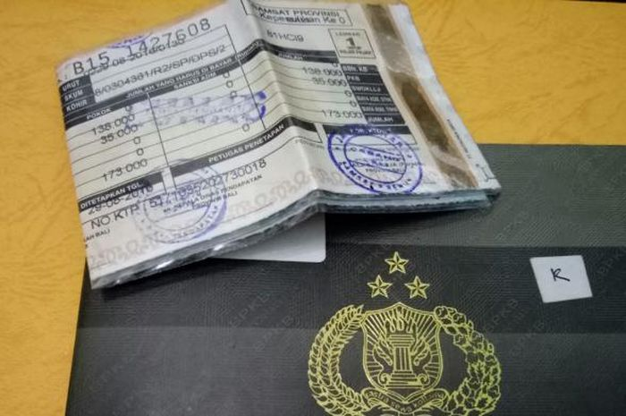

Cara Mengurus STNK Hilang: Panduan Urus Beres!

Surat Tanda Nomor Kendaraan (STNK) adalah bukti sah kendaraan bermotor. Jika STNK Anda hilang, jangan
panik. Ikuti panduan ini untuk mengurus STNK pengganti secara resmi dan mudah.
Daftar Isi Cepat:
Syarat & Dokumen Wajib
Berikut dokumen yang perlu Anda siapkan untuk mengurus STNK hilang:
Fotokopi KTP sesuai nama di STNK.
Fotokopi BPKB dan BPKB asli.
Surat Keterangan Kehilangan dari Kepolisian.
Surat Kuasa bermeterai (jika diwakilkan).
Fotokopi STNK (jika ada).
Penting: Pastikan data kendaraan dan identitas Anda cocok, agar proses lebih lancar.
Langkah-Langkah Mengurus STNK Hilang
Buat Surat Kehilangan:
Datangi kantor polisi terdekat untuk membuat Surat Keterangan Kehilangan STNK. Ini adalah dokumen
wajib.
Datangi Kantor Samsat:
Kunjungi Samsat sesuai domisili kendaraan Anda. Ambil antrean ke loket bagian pengurusan STNK
hilang.
Legalisasi BPKB:
Petugas akan mengecek dan melegalisasi BPKB sebagai bukti kepemilikan sah kendaraan.
Cek Fisik Kendaraan:
Kendaraan Anda akan diperiksa nomor rangka dan mesin, lalu dicocokkan dengan data di BPKB.
Pengajuan STNK Pengganti:
Setelah cek fisik dan verifikasi selesai, petugas akan memproses STNK baru untuk dicetak dan
diserahkan.
Estimasi Waktu & Biaya
Waktu Proses: Sekitar 1–3 hari kerja tergantung antrean dan kelengkapan dokumen.
Biaya: Sesuai dengan Peraturan Pemerintah No. 76 Tahun 2020, biaya penerbitan STNK
hilang:
Motor: Rp100.000
Mobil: Rp200.000
Hal Penting Perlu Tahu
Fotokopi STNK lama sangat membantu mempercepat proses penggantian.
Bawa kendaraan ke Samsat untuk keperluan cek fisik.
Jika kendaraan atas nama orang lain, sertakan surat kuasa dan KTP pemberi kuasa.
Video Tutorial
VIDEO
FAQ Khusus STNK
Q: Apakah bisa mengurus STNK hilang tanpa BPKB?
Q: Haruskah kendaraan dibawa ke Samsat?
Kontak Instansi Terkait
Samsat & Polda setempat Informasi lengkap dapat dilihat di: samsat.info
Atau hubungi Call Center SAMSAT Nasional: 1500-669